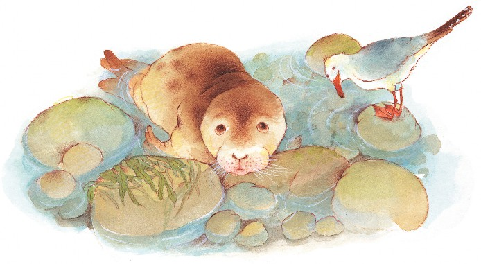
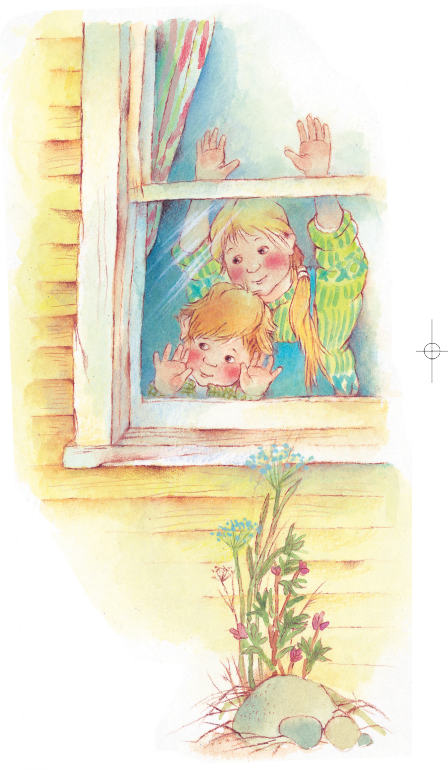
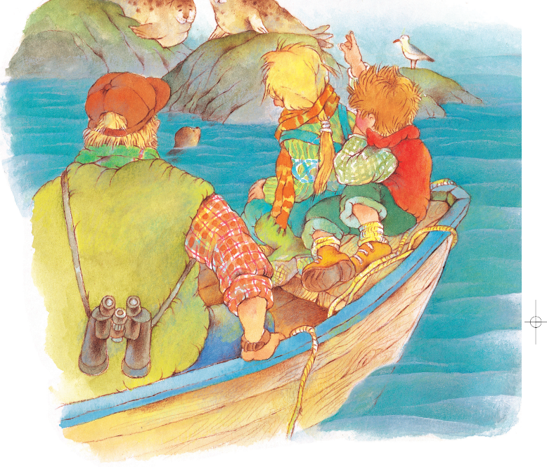

Sally’s Rescue
by Roderick J. Robison Art by Elena Selivanova
Sitting at the cabin’s breakfast table, Anna and Jim could see the sun’s rays flickering on the calm water in the bay. It was a welcome sight after the storm. During the two days of heavy wind and rain, they hadn’t left the cabin.
“We’re going down to the beach,” said Anna, hardly able to contain her excitement.

“Have fun. I hope you find something good washed up on the shore,” their mother replied.
The two children bolted out the front door and ran down the hill to the gravel beach. A strange grayish lump looked out of place in the seaweed that had washed ashore. As they drew closer they noticed it was moving! There, at the water’s edge, a baby seal swiveled her head and peered up at them. Underneath her, strewn about on the rocks, was a section of fishnet.
“Hello, girl. What a beautiful seal you are!” said Anna.
The seal tilted her head at the sound of Anna’s voice.


“She looks so sad,” said Jim. “Maybe she’s hurt. I’ll get Mom and Dad.” Moments later he was back with their parents.
“She’s just a pup, probably less than a month old,” said Mom.
27
“H’m. Appears to be caught in the net,” added Dad as he knelt down and gently untangled the netting. “There. That does it.” He placed the seal in the shallow water.


“Good-bye, girl,” said Anna. “Good-bye, seal,” said Jim.

The seal didn’t swim off as they expected. She just looked up at them with sadness in her two dark, beady eyes. Mom waded out into the water and gently pushed the seal toward the sea, but she just swam back to the shore.
“I’m going to name her Sally,” said Anna. “Can we keep her? Please?”
28

Before her parents could reply, Jim interrupted. “What are those?” he asked, pointing at two dark bumps
bobbing way out on the surface of the sea.
Dad lifted his binoculars and focused them. “They’re seals,” he replied.
“Do you think they’re Sally’s parents?” asked Anna.

“They very well could be,” replied Mom. “If they are, they’re probably looking for her right now.”
“They must miss her very much,” said Jim.
“And she must miss them very much,” added Anna.
“Seals are shy around people,” said Dad. “Let’s go away so they can come and get her.”
Anna and Jim watched from the cabin window, but by low tide no seals had come to Sally. Finally Dad carried a wood-slatted fish box to the water’s edge. Anna put a sardine
29
inside and backed away. After a while, Sally made her way into the box and gobbled the sardine.
They loaded the box with Sally in it onto the boat and motored out into the bay, in search of her family. Sally sat up front in the bow, looking out alertly over the water, sniffing the salt air.
Dad cut the motor as they approached the first group of rocks, where six dark seals were sunning themselves.

“I don’t think that’s them,” said Jim, as the seals dove into the water.
They motored further up the bay and then drifted toward a large rock. Only a single seal sat on it, and he was white and whiskery.
“H’m,” said Dad, scanning a small, rocky ledge up ahead. On the ledge were two spotted gray seals.
Sally whimpered as the boat approached the ledge and, before anyone could bid her farewell, scrambled out of the fish box and dove into the water to join the two seals.
That night at the dinner table, just before sunset, Anna said, “How do we know for sure that those were Sally’s parents on that ledge?”
30


“Oh, I don’t think we need to worry about that,” said Jim, pointing out to the bay. Three gray seals poked their heads above the surface and lingered for a few moments as if to say thank you, then dove under as the sun disappeared below the horizon. 
31